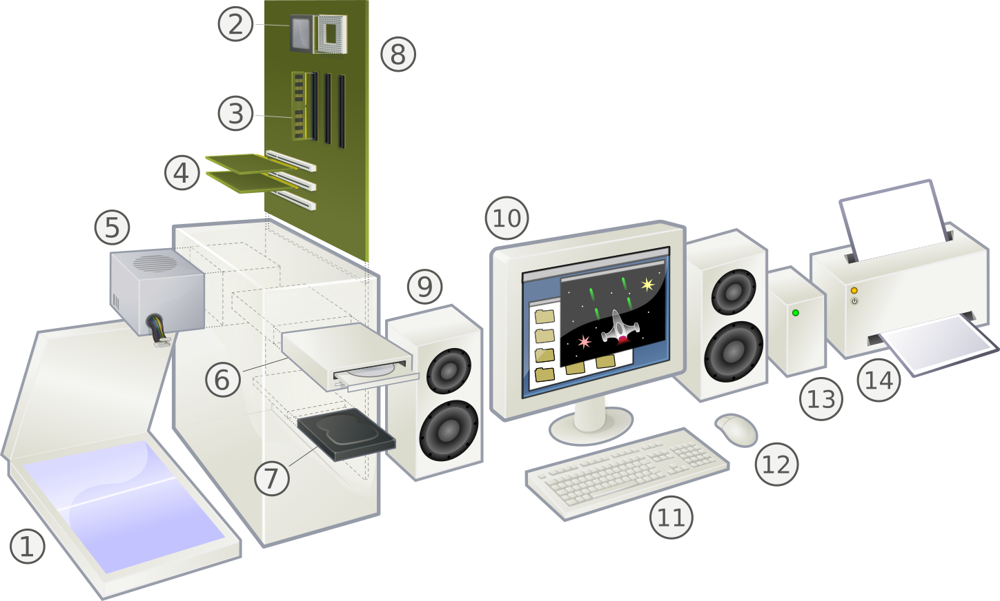

In de wereld van computers zijn invoer, verwerking en uitvoer de basis van informatieverwerking in computers en andere systemen. Deze cyclus bepaalt hoe informatie wordt verzameld, geanalyseerd en gepresenteerd, of het nu gaat om het typen op een toetsenbord, het uitvoeren van berekeningen of het tonen van resultaten op een scherm. Hieronder volgt een uitleg van elk element en hun onderlinge samenhang.
Invoer is de fase waarin gegevens of informatie in het systeem worden gebracht. Dit kan op 2 verschillende manieren:
- Hardware-invoer: Dit omvat apparaten zoals toetsenborden, muizen, scanners en microfoons die fysieke gegevens invoeren.
- Software-invoer: Dit kan bijvoorbeeld gegevens zijn die handmatig in een applicatie worden ingevoerd, of informatie die via internet wordt gedownload.
Verwerking is de fase waarin de ingevoerde gegevens worden bewerkt, geanalyseerd of gevormd tot nuttige informatie. Dit gebeurt meestal met behulp van software en kan verschillende handelingen bevatten:
- Berekeningen: Wiskundige bewerkingen worden uitgevoerd.
- Gegevensanalyse: Het systeem kan patronen herkennen of inzichten genereren uit de gegevens.
- Opslag: Verwerkte gegevens kunnen tijdelijk of permanent worden opgeslagen in databases of bestanden.
Uitvoer is de fase waarin de verwerkte gegevens beschikbaar worden gesteld aan de gebruiker of een ander systeem. Dit kan op verschillende manieren:
- Visuele uitvoer: Dit omvat schermweergaven, grafieken of diagrammen die op een monitor worden weergegeven.
- Papieren uitvoer: Uitprinten of kopiëren van documenten, rapporten of afbeeldingen.
- Audio-uitvoer: Geluiden of gesproken tekst die via luidsprekers of koptelefoons worden afgespeeld.
